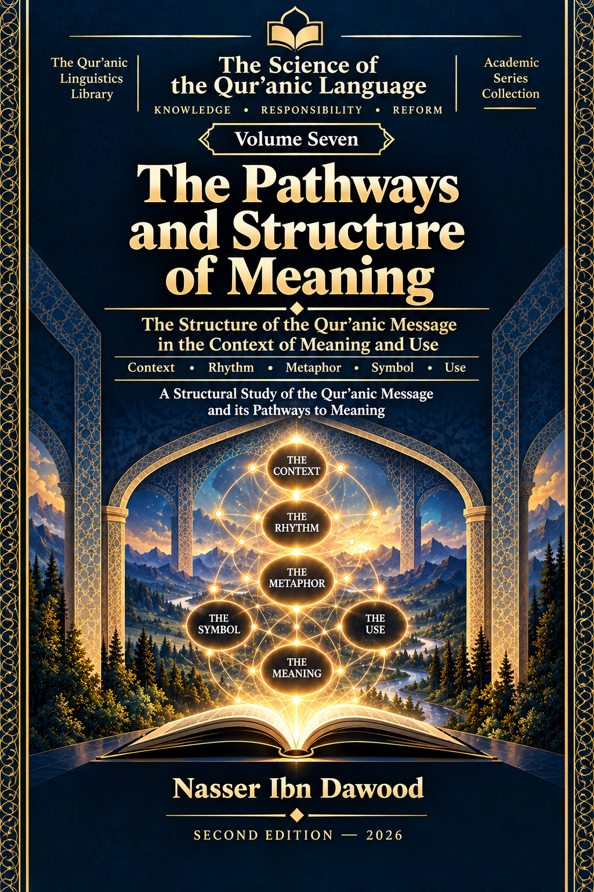

Nasser Ibn Dawood
Text extracted from the author-supplied Word edition; consult the original source.
Preparing the reader…
ENCYCLOPEDIA OF THE ENGINEERING
OF RECOMPENSE IN THE QUR’AN
Volume VII
Return, Repentance, and the Restoration of Balance
From the Structure of Responsibility and Recompense
to the Engineering of Return and Restoration
Nasser Ibn Dawood
Condensed Conceptual English Edition • 2026
A conceptual bridge for the international reader
I. The Global Knowledge Manifesto
Knowledge is a universal right. The author firmly believes that wisdom should not be locked behind paywalls or language barriers.
• Global Access Policy: All books in this library are available for free in multiple digital formats (PDF, HTML, DOCX, TXT).
• The Digital Library: As of early 2026, the collection hosts 68 volumes (34 in Arabic and 34 in English), fully optimized for AI-assisted research and digital archiving.
Official Platforms: Main Website: nasserhabitat.github.io/nasser-books/
GitHub: nasserhabitat/nasser-books
II. Translator’s Note: The Bridge of Meaning
This English edition is a condensed conceptual adaptation. It is not a word-for-word translation, but rather an "extraction of essence." It presents the core philosophical framework in accessible English, omitting the exhaustive linguistic debates and classical references found in the original Arabic text.
For the academic researcher: The original Arabic version remains the primary source for comprehensive linguistic analysis, detailed exegesis (Tafsir), and the complete bibliography.
Editorial scope of this edition
The Arabic original is a 761-page research volume with a large Qur’anic corpus, contextual matrices, resistant resources, reverse tests, appendices, and status registers. This edition preserves the volume’s central research question, methodological controls, functional distinctions, final architecture, and epistemic status, while compressing repeated audits and detailed occurrence-level tables.
Contents of the Condensed Edition
1. The Problem: What Happens After Rupture?
2. How This Volume Thinks: Text, Corpus, Hypothesis, Test
3. Tawbah: Return Without an Automatic Reset
4. From Error to Return: Why Moral Fault Is Not One Undifferentiated Category
5. Human and Divine Tawbah: One Root, Different Directions
6. Istighfār and Maghfirah: Request Is Not the Same as Outcome
7. ʿAfw, Ṣafḥ, Takfīr, and Tabdīl: A Network Without Forced Synonymy
8. Iṣlāḥ, Good Action, Guidance, Istiqāmah, and Tathbīt
9. Effect, Rights, and the Limits of Restoration
10. Continuation and Outcome: No Single Post-Repentance State
11. The Network Model: Actor × Direction × Object × Output × Context
12. Reverse Testing, Resistance, and the Refusal of Premature Law
13. Final Synthesis: From Return to the Restoration of Balance
Glossary of Core Terms
Reading key
The terms FIXED, CANDIDATE, OPEN, NOT ESTABLISHED, and REJECTED are not rhetorical labels. They mark the degree to which a claim survived the volume’s tests. An OPEN result is therefore not a failure; it is a scientifically governed boundary.
Status
Meaning in this volume
FIXED